我一直以来都想做这样一件事情，把我做游戏以来觉得最有价值的东西拿出来，分享给大家。这篇分享，我花了将近两年的时间去写，献给所有喜欢游戏的同学，以及默默为自己的梦想而努力、坚持的朋友。
做一个游戏，能够分享的东西，真的很多。单单从技术层面，就有比如计算机图形学、物理学、人工智能、游戏系统架构、各种工具库和工程方法等等。更别说画面、交互、玩法、数值等不同领域的东西了。另外，需要有非常强的想象力和创造力，因为你要把一堆静止不动的图片，像变魔术一样，变出各种各样具有生命力的“精灵”（sprite）。
不过，这些东西在我看来，其实都不是最重要的。我今天给大家分享的，是一个故事。
有一个同学，他很喜欢游戏，脑子里经常会想，怎么去做一个游戏。但是，他对游戏开发一窍不通，可以说连一点概念都没有，更别说具体的实现了。
怎么办？很多人，恐怕在这个环节，就已经望而却步了。毕竟一个游戏真的要做起来，比想象中，要难很多、很多。
但是，他没有放弃。
他开始找游戏开发相关的资料，从零开始，学习怎么把角色渲染到一帧一帧的游戏画面中，学习怎么控制角色在屏幕中移动，做出不同的动作。
虽然听起来是很简单的东西，但是当你的角色真的活灵活现地出现在你面前的时候，还是挺让人兴奋的。不过，很多人，也许到这一步，就不再弄了。因为这距离一个真正的游戏，还相当远。
但是，他没有放弃。
他尝试找了一些怪物的美术素材，试着根据这些角色的动画，设计它们之间的攻击有效性计算。因为他想做一个ARPG，而不是一个回合制的游戏。
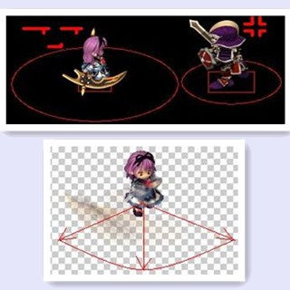他又找了一些地板和障碍物的美术素材，并设计怪物的视野检测算法。因为他觉得，既然是ARPG，怪物就一定要有个发现玩家的方法。
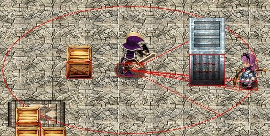其实，上面这些，都很简单，难的是怎么让怪物自动跟玩家角色战斗。很多人，到了这里，可能就放弃了，因为实现这个AI是有一定难度的。
但是，他没有放弃。
很幸运，他以前在学校的时候，学过一点点算法，敲个A*对他来说并不是什么难事。他为怪物实现了寻路，还有行走操控。
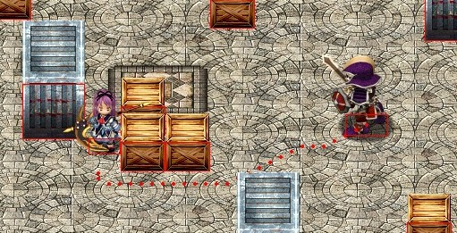但是，光会走路的怪物不是完整的AI。他开始研究状态机、行为树等AI模型，并着手实现。很快，一个怪物战斗的demo出来了。
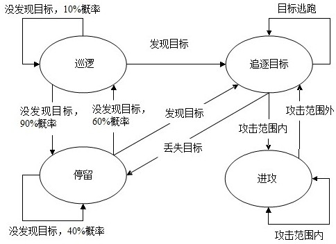说实话，来到这一步，其实是最容易放弃的。因为一个相对比较难的部分都做出来了，当一个人的好奇心耗尽之后，就不会再有什么动力，继续下去。
但是，他没有放弃。
他还是努力地写完一个简单的关卡，虽然看起来很挫。他把代码公开了。
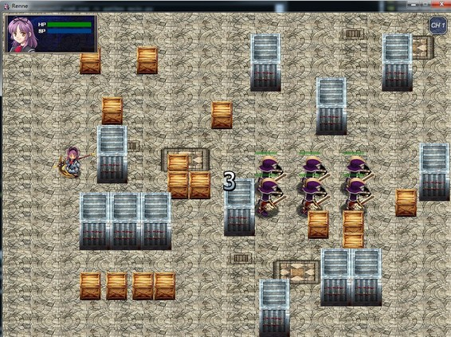其实，有很多理由，都可以让他放弃做下去：同人作品，不能赚钱；跟工作无关，无法和晋升挂钩；业余水平，也许最后根本没人会去玩；……
但是，他都没有因此而放弃。
他一直坚持。
他写了一个地图编辑器。

他用这个编辑器设计了不同的游戏关卡。
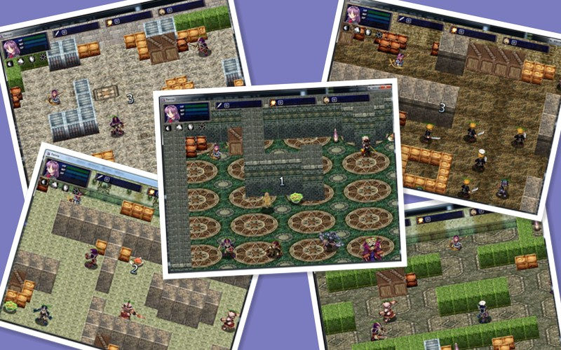他为游戏加入了开场和加载动画，暂停菜单，通关动画。
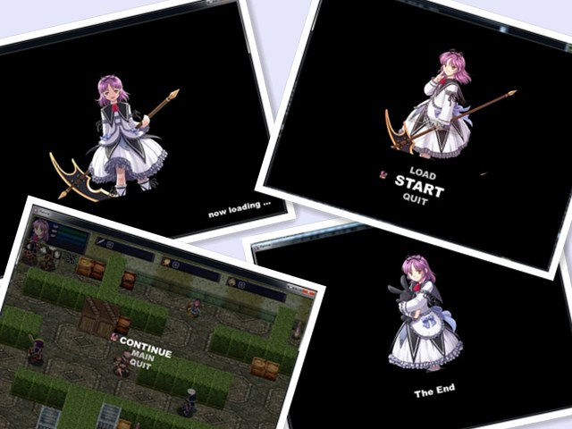他增加了攻击效果，重要人物的攻击特效，魔法技能，人物音效与背景音乐。
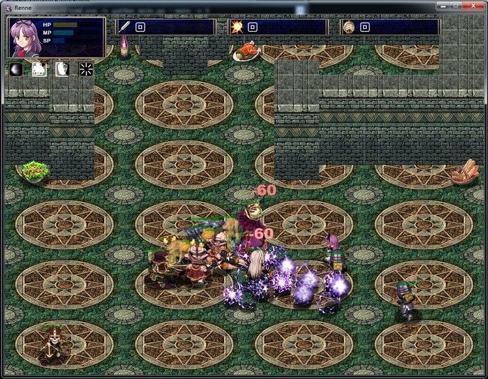他完成了游戏的流程控制以及一些计分规则和成就计算。
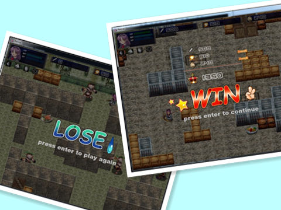他把脑海里所有零散的东西，串联起来，变成了一个真正的游戏。
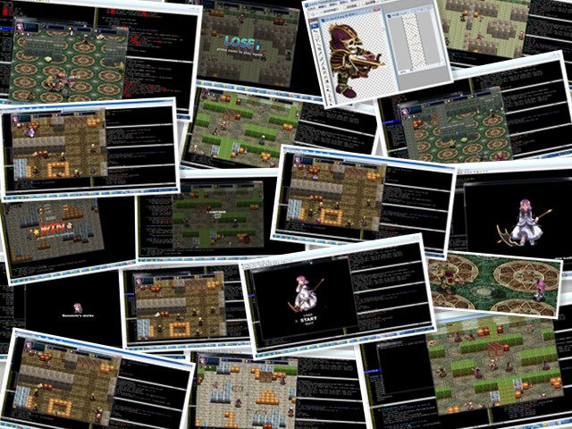是坚持。对你热爱的事物的那份执着，这才是最重要的。
很多事情，看起来很简单，说起来也很简单。但实践起来，却很难。能坚持下去，就更难了。
有多少同学，买一本枕头书回来看，最后也就看完了第一章；有多少同学，兴致勃勃地去学一门编程语言，最后也就写了个“hello world”；有多少同学，用各种牛逼的框架搭了一个博客、个人网站，最后也就开了个头，没继续往里面放东西；有多少同学，听别人说某个技术很前沿，也跟风折腾了一下，最后只搞了个demo，也就不了了之。
坚持一件你认为值得坚持的事情，不要轻言放弃。
坚持不代表成功，不代表一定能达到自己的目标。但坚持本身是一种弥足珍贵的品质，是一切事情成功的前提。没有坚持，哪怕有千千万万个成功的机会和正确的方向摆在你面前，你也会与它们失之交臂。成功的道路，往往都是困难的，充满颠簸，充满障碍，充满挫折，充满质疑，充满绝望，充满不理解，充满了各种各样让你放弃的理由。没有坚持，你根本不可能到达成功的彼岸，看到胜利的曙光。
世上无难事，只怕有心人。无论多么微不足道的事情，都需要你的坚持，才能收获它背后的价值。哪怕只是每天半小时的锻炼，哪怕只是每天半小时的阅读，哪怕只是生活上一些细小而有益的事情。坚持下来，它们最终会成为你的财富。
生命中有无数有价值的东西，犹如恒河沙数，流淌在岁月的长河。但我希望做的事情，不是把它们带到你面前。而是给予你勇气，让你勇敢地去探寻，勇敢地去坚持。
这是我分享这个故事的初衷，希望能给予你正能量，为你的梦想而坚持。
谢谢大家。
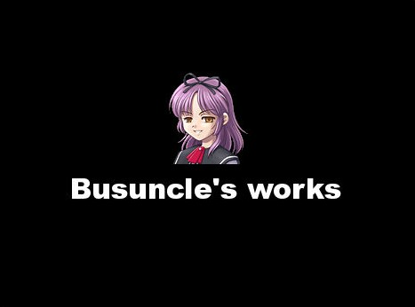2013年6月